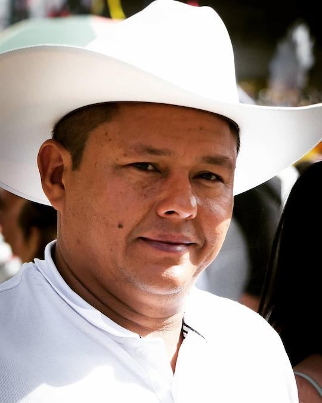

Miller Santanilla Espinosa
Cantautor caqueteño y difusor del Folclor de los llanos Colombo - Venezolanos.
Cantautor caqueteño y difusor del Folclor de los llanos Colombo - Venezolanos.
Agrupación musical conformada en 1994 por Miller Santanilla Espinosa, cuyo origen obedeció a la necesidad de divulgar el folclor y las costumbres llaneras en el interior de nuestro país y, a la vez, integrar talentos de varias regiones radicados en esta ciudad. Actualmente, está integrada por representantes del Vichada, Meta, Cundinamarca y Caquetá. De esta manera, se ha logrado afianzar y difundir aún más la cultura y el sentir de los pueblos del Llano Colombiano. El nombre del grupo, "Cantar del Llano", representa el homenaje póstumo que se le rinde al compositor Miguel Angel Martín (q.e.p.d.), quien falleció en el mismo año en que nació esta agrupación. Además, se refiere al inicio de una de sus más famosas páginas musicales titulada "Carmentea".
| MARCOS ENRIQUE CEPEDA | ARPA |
| KEVIN TORRES | MARACAS |
| OVIDIO LEYTON | CUATRO |
| UBER SANTANILLA | BAJO |
| MILLER SANTANILLA | VOZ |
Miller Santanilla Espinosa, cantautor caqueteño y difusor del folclor de los llanos colombo-venezolanos, actualmente radicado en la ciudad de Cali.
Desde su infancia, inició la dura faena de aprender de forma empírica a interpretar el cuatro llanero y a cantar pasajes y joropos en la ciudad de Florencia. A pesar de la falta de maestros en la región amazónica, se esforzó y cultivó una exitosa carrera musical, contando con siete producciones discográficas y siendo reconocido como el principal embajador del llano en el suroccidente colombiano. Su grupo, "Cantar del Llano", proyecta su reconocimiento a nivel nacional.
Nació en San José del Fragua (Caquetá) el 02 de junio de 1971, hijo de Nicasio Santanilla y Ana Silvia Espinosa. Durante su primera década, vivió en el campo cerca del Río Fragua y el Valdivia. Allí pasó su infancia, realizando labores agrícolas y de ordeño, y montando a caballo por las mañanas para llevar los productos a San José. Desde entonces, desarrolló un amor y pasión por la ganadería y los caballos, influenciado por las canciones llaneras de la época.
En 1981, debido a la violencia, su familia se trasladó a la capital, Florencia, donde completó sus estudios primarios y secundarios. En 1991, en busca de nuevos horizontes, se mudó a la ciudad de Cali, donde obtuvo su título de Tecnólogo en Ingeniería de Sistemas. Actualmente, combina la música con su actividad en la industria automotriz.
El amor por la música es herencia paterna y tuvo sus primeros acercamientos en las alegres fiestas de su vereda, El Valdivia. Posteriormente, en el colegio, tuvo la oportunidad de participar en la clase de trabajo manual con la profesora Sara, y en la Casa de la Cultura de Florencia, con el maestro Orlando Perdomo, quien fundó el Grupo Vocal Mixto "TAYARU". Durante un año, se desempeñó como voz Tenor en este grupo, pero luego decidió unirse como cuatrista y ocasional cantante del único grupo llanero en el Caquetá, "YARY BRAVÍO". Esta experiencia fue el principal impulso y motivación para seguir luchando por su gran sueño de convertirse en cantante y compositor.
Cuando llegó a la ciudad de Cali, continuó su tarea con su compañero, el cuatro, y realizaba presentaciones como solista en establecimientos nocturnos, centros comerciales y reuniones privadas. Luego, tuvo la oportunidad de unirse como cantante al Grupo "LLANO JUVENIL" liderado por el maestro Yesid Castro de Arpista.
Hoy en día, es reconocido como Embajador del Joropo en el suroccidente colombiano.
Esta Fundación surge de la importancia del posicionamiento de nuestro Folclor. Es relativamente reciente el conocimiento que se tiene de la música, danzas y cultura llaneras en otras regiones del país y específicamente en el Valle del Cauca y el suroccidente de Colombia.
La Fundación Artística "Cantar del Llano" nace en noviembre de 2011, debidamente constituida y registrada ante la Cámara de Comercio de Cali y ante la DIAN. Está dirigida por el cantautor caqueteño Miller Santanilla, radicado en Cali desde 1991, quien, con su grupo llanero "Cantar del Llano", se ha convertido por voluntad y esfuerzo propio en el Embajador natural del folclor llanero en el suroccidente y Eje cafetero de Colombia. Esta posición la ha logrado mediante la promoción y divulgación de la cultura llanera a través de innumerables presentaciones artísticas en muchos escenarios.
La Fundación Artística "Cantar del Llano" fue creada con el propósito fundamental de continuar la labor de difusión del Folklor y la cultura Llanera en el suroccidente de Colombia, abarcando la música, danza, gastronomía, artesanía, deportes, turismo, entre otros, mediante la realización de producciones discográficas (audio y video), parrandos llaneros, participación en festivales, realización de conversatorios musicalizados, enseñanza de instrumentos y baile tradicional para el público en general, y sobre todo, acercando a la niñez y la juventud al conocimiento de los valores culturales de la región oriental.
Entre los objetivos planteados a corto plazo se encuentra la iniciación de clases en la academia de danzas e instrumentos musicales llaneros, la creación y coordinación de la semana cultural del llano en el Valle del Cauca, participación en festivales llaneros como representantes vallecaucanos, así como continuar con la divulgación de la cultura llanera mediante presentaciones musicales didácticas en la gran mayoría de colegios de la ciudad, entidades de beneficencia y demás entidades interesadas en la cultura de nuestros pueblos.